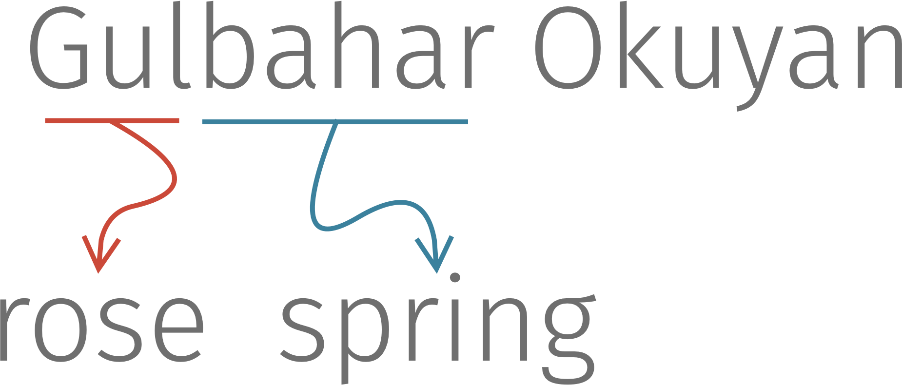
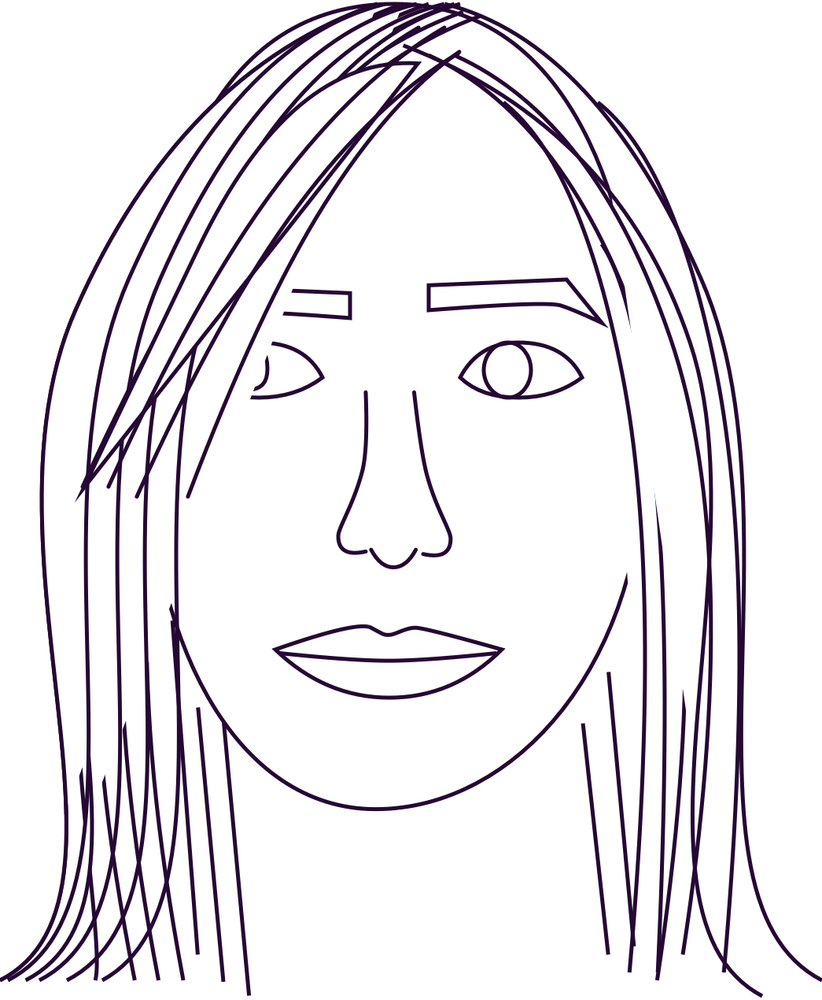

Social Innovation
Co-creating with USAID for grassroots innovation in financial inclusion in rural areas in Haiti.
See more.

Website Redesign
Creating a brand and website from scratch. This was part of the Design bootcamp with Bloc.io.
See more.
Services
Business Development
8+ years of experience in...
Partnership Development
Strategy
Marketing
Proposal Writing
Project Development
Cross-functional Team Management
Mentorship & Training
Business Design & Design Ops
Experience designing & developing
Tools (project design & processes)
Processes
Forms (internal operations)
Surveys
A/B Tests
Financial Projections
Websites (UX, UI, front-end)
Business designer & developer shuffling between NYC & DC.
My name is Gulbahar Okuyan, but call me Rose.
Born to a Turkistan-American family, I have always been surrounded by rich, competing cultures. I grew up in Brooklyn and NJ to a mixture of nomadic ancestry, with farmer and engineer grandparents, and an architect/ framer father and artistic mother. All their traits rubbed off on me. I have lived in 3 countries and traveled to more than 25. And am constantly redecorating or moving apartments. I enjoy change and trying new things.

